Discover
Candidates build a profile from their CV and review technical roles one card at a time, with a short reason attached to every suggestion.
A proposed recruitment and career-development platform built only for Computer Science and Engineering roles. It combines swipe-based job discovery, explainable skill matching, lighter recruiter workflows and interview preparation that adapts once a candidate enters a real hiring process.
M1 · Done
Fiki & project description
M2 · Done
Validation 1 (idea)
M3 · Done
Mockups & landing page
M4 · Done
UX
M5 · Current
Validation 2 (lead generation)
M6–M11
Market, MVP, sale, final
Project overview
Technical hiring is usually split across several disconnected places: a job board to find roles, an applicant tracking system on the company side, and separate sites for interview practice. Matchify proposes to connect these steps for a single, well-defined market (CS/CE jobs), so that candidates and recruiters work from the same, explicit picture of skills.
Candidates build a profile from their CV and review technical roles one card at a time, with a short reason attached to every suggestion.
Recruiters define requirements up front. Both sides see an explainable compatibility estimate, and a match forms only when interest is mutual.
Entering a hiring process unlocks role-specific preparation. Between applications, private progress tracking points to the next skill worth learning.
What Matchify is deliberately not
Team & responsibilities
Four students at the Faculty of Automatic Control and Computers (ACS), POLITEHNICA Bucharest. The role split below is a working proposal that spreads product, engineering and research work evenly. It describes who will own what during the project, not anyone's prior experience.
Owns the backlog and milestone planning, and the service and data architecture behind profiles, jobs and matches.
Leads mockups, user flows and the candidate and recruiter interfaces, including the swipe and pipeline views.
Owns CV skill extraction, the explainable matching model and the adaptive question engine for preparation.
Leads customer discovery and competitor research, and owns test plans and quality checks before each release.
● owner · ○ contributor. Every area has exactly one owner, and nobody owns more than three areas.
| Area | Victor | Radu | Cosmin | Bogdan |
|---|---|---|---|---|
| Project Manager / Product Owner | ● | ○ | ○ | |
| UI/UX Design | ● | ○ | ||
| Frontend Development | ● | ○ | ||
| Backend Development | ● | ○ | ||
| AI & Matching Systems | ○ | ● | ||
| Database & Infrastructure | ● | ○ | ||
| Research & Market Analysis | ○ | ● | ||
| QA & Testing | ○ | ● |
Milestone 1 · 19.10.2026
The problem we set out to solve, our proposed solution, who it is for, the market around it and a first business model.
1.1 — Problem
These are the problems we believe exist, seen from our perspective as students approaching the tech job market. We present them as hypotheses; Milestone 2 below tests them with candidates and people who hire.
Applications disappear into a black hole
Applying is easy, so candidates send many applications through general job boards and often never hear back. Silence tells them nothing about what to change.
Titles hide very different jobs
"Software Engineer" can mean embedded C, cloud infrastructure or ML research. Generic filters do not separate CS/CE specializations well, so candidates spend time on postings that were never a fit.
No actionable career guidance
Students especially do not know which skill would most improve their chances for the roles they want, or how far they are from those roles today.
Preparation is disconnected from the actual process
Interview practice is usually generic and separate from the role a candidate is actually being considered for, even though that role's requirements are known.
Screening overload
Popular technical postings attract many applications that only loosely match the requirements. Reading them one by one is slow and repetitive.
Keyword screening misses real ability
Projects, coursework and open-source work rarely map cleanly to CV keywords, so strong junior candidates can be filtered out while keyword-heavy CVs pass.
Administrative pipeline work
Moving candidates between stages and sending status updates takes time that recruiters would rather spend talking to people.
Candidates arrive unevenly prepared
Companies invest in interviews with candidates who had no clear idea what the role expects, which makes interviews less informative for both sides.
Why focus on CS/CE only
Technical roles are described by relatively explicit, testable skills (languages, frameworks, tools, fundamentals), which makes skill-based matching and targeted preparation more feasible than in a general market. The field also spans many distinct specializations, from frontend to embedded and hardware, where a narrower focus can produce much better recommendations. Finally, our own faculty is a natural first community to learn from.
1.2 — Solution & value proposition
For CS/CE candidates tired of applying into silence, and tech recruiters overwhelmed by poorly matching applications, Matchify is a specialized recruitment platform that matches both sides on explicit technical skills, explains why each match was suggested, and helps candidates prepare properly once a company is genuinely interested.
M-01
Smart profile
CV upload, extraction of skills, experience, interests and preferences, then review and correction by the candidate.
M-02
Swipe discovery
Card-based browsing across frontend, backend, full-stack, AI/ML, data, security, DevOps, cloud, embedded and hardware.
M-03
Explainable matching
Compatibility estimate broken into visible components (skills, level, preferences) instead of one opaque number.
M-04
Recruiter pipeline
Job requirements, candidate recommendations and stage changes with one-click actions and status templates.
M-05
Private progress
Skill milestones, achievements and a personal ranking indicator that only the candidate can see. No public leaderboard.
M-06
Adaptive preparation
Practice questions, assessments and mock interviews that adapt to previous answers, with feedback after each round.
1.3 — How the platform would work
The proposed flow connects both sides of the market. Candidate steps are in indigo and recruiter steps in coral; the two lanes meet at the match.
Profile
Candidate uploads a CV; extracted skills and preferences are shown for review.
Recruiter creates a role with required skills, level and type.
Discover
Candidate swipes on recommended roles.
Recruiter reviews recommended profiles and shortlists.
Match
Mutual interest creates a match. Both sides see the explanation: matched skills, gaps, level and preferences.
Pipeline
Recruiter advances, schedules or closes with simple actions. Status updates reach the candidate automatically.
Prepare
Candidate unlocks role-specific prep: partner materials if the company provides them, otherwise curated public resources and adaptive practice.
Partner company
Company-provided preparation
Official learning resources, recommended topics and materials that the company chooses to share, combined with adaptive practice on those topics.
Non-partner company
Requirement-based preparation
Public resources selected from the job's listed requirements, common industry interview topics and the candidate's own gaps. No claim of access to a company's real questions.
This mock-up shows how discovery and explainable matching could feel. A fixed demo profile is compared with four fictional roles using a deliberately simple, visible formula.
Demo profile
3rd-year CS student · Intern / Junior · prefers Backend, Data, Hybrid, Bucharest
Score = 60% skills coverage + 25% experience level + 15% preferences. Real weights would be learned and validated. A score is an estimate to help people decide, never a decision.
Keyboard: focus a button, then use ← pass / → interested.
What would happen next
Two of the fictional recruiters have pre-shortlisted the demo profile, to show how a mutual match unlocks preparation.
1.4 — Customer segments
Matchify is a two-sided platform. Candidates get access through their university when it has a partnership with us (the university pays), or otherwise through a subscription tier. Companies pay for access to well-matched candidates and for tools that save recruiting time.
Students & internship seekers Early adopters
Undergraduate and master's students in CS/CE looking for internships and first jobs. They need guidance on what to learn as much as they need listings.
Junior engineers (0–2 years)
Looking for their first or second role and wanting clear feedback on skill gaps.
Mid-level & senior engineers
Often passive candidates who value precise matches and low effort over browsing many listings.
Career switchers into CS/CE
People moving in from adjacent fields who need a structured path to job-ready skills. Later segment.
Tech startups & scale-ups Early adopters
Small teams without a dedicated recruiter, where engineers or founders screen candidates themselves.
Product & IT services companies
Companies hiring at volume, especially interns and juniors, where screening time adds up quickly.
In-house recruiters, talent acquisition teams and hiring managers
The day-to-day users on the employer side; the company account is the buyer.
Partner universities
Pay so that their students get access, as part of their career support.
IT recruitment agencies
Possible later segment that would use the matching and pipeline tools for several clients.
| Segment | Main need | Uses the product | Pays | Priority |
|---|---|---|---|---|
| CS/CE students | First internship or job, learning direction | Yes | University partnership or subscription | Launch |
| Junior / mid / senior engineers | Better-fitting roles, less effort | Yes | Subscription | After launch |
| Partner universities | Career support for their students | No | Yes (partnership) | Launch |
| Startups & scale-ups | Qualified candidates without a recruiting team | Yes | Yes | Launch |
| Companies hiring at volume | Less screening time per hire | Yes | Yes | After launch |
| Partner companies | Better-prepared candidates, employer brand | Yes | Yes (partnership) | Later |
| IT recruitment agencies | Matching across several clients | Maybe | Maybe | Later |
Early-adopter hypothesis: CS/CE students in Bucharest who are looking for internships, together with local tech companies that run internship or junior hiring programs. This is the first pairing we plan to interview in M2.
1.5 — Market & competition
Matchify competes with three groups: job boards, AI hiring tools inside large platforms, and interview-preparation services. Several competitors already use AI for matching, so "AI matching" alone is not a differentiator. The information below comes from the competitors' own pages and press coverage (sources at the end). "Not found" means we did not find it in public documentation, not that the feature does not exist.
Long-running Romanian internship program, started in 2005 for ACS students. Seasonal campaigns with partner companies and IT-focused categories such as AI, software development and mobile.
Relative to us: closest local brand for our early adopters; no matching or preparation features described on its site. Revenue model not public.
General Romanian job board owned by Ringier, with manually verified ads and a salary calculator. Employers pay for job postings.
Relative to us: broad reach across all sectors; skill-based matching not found in public docs.
General job board and app. Employers buy credits for posting, promotion and database search. Its AI assistant "Bestie" recommends jobs to candidates and candidates and video interviews to employers.
Relative to us: already uses AI on both sides, so our difference must be CS/CE depth, explanations and preparation.
Job Match compares a profile with a job's qualifications (with more detail for Premium). Recruiters get an AI Hiring Assistant, and LinkedIn Learning recommends courses.
Pays: employers (Recruiter, job promotion) and candidates (Premium).
Largest general job search engine. Smart Screening gives employers an AI fit score per applicant; Smart Sourcing recommends candidates with "why a fit" summaries.
Pays: employers, through sponsored jobs (including pay-per-started-application).
Personalised job recommendations and detailed company profiles; recruiters can search candidates by skills. Otta joined it in 2024.
Pays: employers.
Startup job marketplace with free job posts, paid job ads, AI sourcing seats and a managed recruiting option.
Pays: employers (per seat, per role and placement fee).
On the employer side, technical screening and interview assessments. On the candidate side, prep kits with mock tests and AI mock interviews.
Coding practice with company-tagged questions and timed interview simulations; paid Premium tier.
Anonymous mock interviews with experienced engineers, company-specific coaching and a free AI interviewer.
Market signal: the sector is consolidating around large platforms that add AI. Hired was folded into LHH Recruitment Solutions in 2024, Pramp moved to Exponent, and in 2025 Recruit Holdings announced that Glassdoor would be integrated into Indeed. A new entrant should therefore compete on focus and depth, not on breadth.
● documented publicly · ◐ partly / indirectly · – not found in public docs · Matchify column = proposed, not built.
| Platform | CS/CE-only focus | Fit signal for candidates | AI tools for recruiters | Skill-learning guidance | Interview prep | Prep tied to an active application |
|---|---|---|---|---|---|---|
| Stagii pe Bune | ◐ | – | – | – | – | – |
| eJobs.ro | – | – | – | – | – | – |
| BestJobs | – | ◐ | ● | – | – | – |
| LinkedIn Jobs | – | ● | ● | ● | – | – |
| Indeed | – | – | ● | – | – | – |
| Welcome to the Jungle | – | ◐ | ◐ | – | – | – |
| Wellfound | ◐ | – | ● | – | – | – |
| HackerRank | ● | – | ● | ◐ | ● | – |
| LeetCode | ● | – | – | – | ● | – |
| interviewing.io | ● | – | – | – | ● | ◐ |
| Matchify proposed | ● | ● | ● | ● | ● | ● |
1.6 — Competitive advantage
Many of these features exist on their own somewhere in the market. Our proposed advantage is combining them in one flow for one specialized market. Each point also comes with the risk we have to test.
A1
A taxonomy built for technical specializations (frontend to hardware) allows finer matching and recommendations than a general board.
Risk: a narrow market must still offer enough jobs to keep candidates engaged.
A2
Both sides express interest, and a match needs both. Recruiters start from candidates who already want this kind of role.
Risk: needs enough activity on both sides from day one, the classic marketplace cold-start problem.
A3
Requirements defined once drive recommendations, and stage changes take one action. Automation handles admin work while people make the decisions.
Risk: companies already use applicant tracking systems; Matchify must integrate with them, not compete.
A4
Matched and missing skills are shown with every estimate, and they feed directly into "what to learn next" for the roles a candidate actually wants.
Risk: estimates must prove useful; a confident but wrong score would damage trust.
A5
Milestones and a personal ranking indicator motivate progress without exposing anyone on a public leaderboard.
Risk: gamification can feel childish to experienced engineers; it must stay optional and subtle.
A6
Prep unlocks after a candidate enters a company's process and adapts to that role's requirements and to previous answers.
Risk: question quality depends on good content and models; this is the hardest part to build.
A7
Companies can choose to publish official preparation material for their own processes. Candidates get legitimate, company-approved guidance, and companies get better-prepared interviews and a channel to present their engineering culture.
Risk: companies must see enough value to invest time in creating content.
1.7 — Key metrics
These are the indicators we plan to track once a prototype exists. No values are shown because there is no product and there are no users yet. Targets will be set after validation.
North Star metric (proposed)
Mutual matches that reach a first interview
It only grows when both sides get value: candidates found roles worth pursuing, recruiters found candidates worth interviewing, and the match was good enough to act on. Swipes or sign-ups alone could grow without anyone being helped.
| Metric | Definition (proposed) | Why it matters | Side |
|---|---|---|---|
| Match-to-interview conversion | Mutual matches that lead to a first interview ÷ all mutual matches | Tests whether matches are actually useful | Both |
| Application-to-response rate | Expressions of interest that receive any recruiter response within 7 days ÷ all expressions of interest | Directly addresses the "black hole" problem | Candidate |
| Recruiter screening time | Median time from a candidate appearing in a queue to a shortlist or reject decision | Core value claim for paying customers | Recruiter |
| Candidate retention | Share of candidates active again 30 days after sign-up | Shows lasting value beyond the first visit | Candidate |
| Recommendation engagement | Share of recommended roles that receive an "interested" swipe; roles reviewed per active week | Measures recommendation relevance | Candidate |
| Skill development progress | Share of candidates who complete at least one recommended skill milestone within 30 days | Tests the career-guidance promise | Candidate |
| Prep completion rate | Unlocked preparation plans completed before the interview ÷ plans unlocked | Tests whether adaptive prep is used | Candidate |
| Employer satisfaction | Short survey score after each role is closed, plus subscription renewal rate | Predicts whether companies keep paying | Recruiter |
| Score calibration (guardrail) | Do higher match estimates actually correspond to more interviews and offers? | Keeps the matching honest and explainable | Both |
1.8 — Cost structure
We list cost categories and what drives them, not amounts. We will only attach figures once usage assumptions have been researched (planned for M6, Market research).
Web app, API, background workers, monitoring. Grows with traffic.
Early stage: free tiers and student programs where available.
Profiles, jobs, matches and uploaded CV files, plus backups.
Driver: number of users and stored documents.
CV parsing, skill extraction, match computation, question generation and feedback. Likely the largest variable cost.
Mitigation: cache results, use smaller models where possible, process in batches.
Engineering, design and QA time. Currently our team's work during the course; salaries would apply after it.
Driver: team size and scope.
CVs are personal data under GDPR, and the EU AI Act treats AI used in recruitment as high-risk. This means encryption, access control, audits and legal advice.
Note: unavoidable for this product, not optional.
Reaching students (university communities, career fairs, content) and selling to companies (direct outreach, demos).
Driver: cost to acquire each side of the market.
1.9 — Revenue streams
Companies pay for recruiting; candidates are covered by a university partnership or a subscription. Prices are intentionally not listed; willingness to pay is one of the things we still have to validate.
If the candidate's university has a partnership with Matchify, the university pays and its students get access. Otherwise, access depends on the candidate's subscription tier.
Starter
Small teams and startups. Limited active roles, core matching and pipeline.
Growth
More roles and seats, pipeline automation and hiring analytics.
Enterprise
Custom limits, integrations, single sign-on and dedicated support.
Tier names and contents are illustrative. Pricing to be defined after validation.
Advanced candidate recommendations, bulk pipeline actions, deeper analytics and branded company pages. Any promoted listing would be clearly labelled and kept separate from the match estimate.
Companies pay to publish official preparation resources, run internship campaigns or events, and present their engineering culture to relevant candidates.
Paid connectors and API access to existing applicant tracking and HR systems.
1.10 — Product vision
Explainable by default
No score without its reasons.
People decide
Automation suggests and saves time; humans hire.
Private progress
Rankings are personal, never public.
Skills over keywords
Projects and coursework count too.
Honest preparation
Build real skills; no leaked questions.
Ideas beyond the MVP (not committed): portfolio signals from public code repositories with the candidate's consent, collaboration with university career services, mobile apps, and support for more languages and countries.
Milestone 2 · 02.11.2026
We ran two anonymous questionnaires, one for candidates and one for people who hire for junior IT roles, and an in-depth interview with a technical hiring manager. Both asked about what people actually did in their most recent search or hiring process, not what they think of Matchify. Matchify was not mentioned in either form. This section documents the whole process, every question we asked, all findings (including the ones that contradict us) and what we changed as a result.
2.1
The idea came from our own position as students about to enter the tech job market: many applications sent through general job boards, little or no feedback, and interview preparation done on generic platforms unrelated to the role. In M1 we wrote these down as problem hypotheses, four for candidates and four for recruiters, knowing they reflected our own experience and had to be checked with other people.
2.2
A recruitment platform only for CS/CE roles: profiles built from CVs, swipe-based discovery, an explainable match estimate visible to both sides, a lighter recruiter pipeline, private skill progress, and adaptive interview preparation unlocked once a candidate enters a company's process. In M2 we deliberately set the solution aside and tested only the problem.
2.3
Who
What we tested
How
| Assumption | If it is false… | Importance | Evidence before M2 |
|---|---|---|---|
| Candidates often get no answer to applications | The "black hole" problem we build discovery around disappears | High | Only our own experience |
| Screening CVs is the most time-consuming step for hiring teams | The recruiter value proposition, and our revenue, is weak | High | None |
| Candidates struggle to judge their fit and prepare for a specific role | Skill guidance and adaptive prep are not needed | Medium | Only our own experience |
| Companies already pay for recruiting tools and would switch | Nobody pays for Matchify | High | None |
2.4
Identifying the segments
We split the market into the two sides from M1. On the candidate side we included anyone who had recently searched for an IT internship or job, from bachelor's students to recent graduates. On the hiring side we included every role involved in junior hiring, because we did not yet know who owns the problem: recruiters, hiring managers or engineering leads.
Reaching them
We shared both forms on Reddit and in person. On the hiring side we approached managers directly at eMAG, Bitdefender, Keysight and a London-based hedge fund.
Collecting information
Online questionnaires mixing a few multiple-choice questions (for context) with open questions asking for a concrete story, followed by a face-to-face interview where we could ask follow-up questions. The forms asked respondents not to share personal or confidential data.
"Experiența studenților cu internshipurile și joburile în IT" · open the form ↗
"Recent Experiences in Recruiting for Junior IT Roles and Internships" · open the form ↗
2.5
responses · 7 searched in the last 30 days · 7 have taken a technical interview or test
Study stage
Where they found listings (multiple choice)
Positions applied to in that period
Outcome of the last application
responses · 3 directly involved in junior IT hiring in the last 12 months
Role
Applications for the most recent role
How technical skills were assessed (multiple choice)
Step that took the most time
New recruiting tool introduced in the last 12 months
2.6
To go deeper than the forms allow, we interviewed a technical hiring manager in person. This person prepares the technical topics and runs the interviews for internship and junior roles. Nine questions, three of them follow-ups, all about their most recent recruitment.
5–10%
of applicants reached the technical interview
1 h
technical interview per internship candidate
2.5 h
across two technical interviews per junior candidate
2–3 h
more spent going through take-home assignments
"Most of the time went into the technical interviews and checking the assignments, especially for juniors."
"It was the gap between what we expected him to know, given his results, and how he actually did in the interview. In the end, we went with what we saw in the technical evaluation."
Can you tell me about the last technical junior or internship recruitment you were directly involved in?
I was involved on the technical side. We received the role we had to recruit for, I prepared the topics and I ran the interviews with the candidates.
Roughly how many candidates applied, and how many reached the interview? follow-up
I don't remember exactly how many applied in total, but I'd say somewhere around 5–10% of them reached the technical interview.
How did the selection go, from receiving applications to choosing the candidate?
It depends on the position. For the internship we had a single technical interview; for the junior role the process was a bit longer, with two technical interviews and a take-home assignment. I handled the technical part, not the whole recruitment process.
Which stage took the most time from the team?
On our side, most of the time went into the technical interviews and checking the assignments, especially for juniors.
Roughly how long did it take, and what filled that time? follow-up
For the internship, the interview took about an hour. For the junior role we had two interviews, one of an hour and one of an hour and a half. On top of that, we spent about 2–3 hours going through the assignments.
How did you assess the candidates' technical skills in that recruitment?
Generally we asked theoretical questions about the things we work with day to day. For juniors there was also a practical part, where we discussed the assignment they had done.
Do you remember a recent situation where it was hard to decide whether a candidate was right for the role?
Yes, we had a candidate who had been an international informatics olympian. He clearly had potential and a very strong background, but he didn't do very well in the interview, and in the end we decided not to hire him.
What information was missing, and how did you proceed? follow-up
I'm not sure information was really missing. It was more the gap between what we expected him to know, given his results, and how he actually did in the interview. In the end, we went with what we saw in the technical evaluation.
What tools or methods did you use to manage that recruitment?
Mainly Teams, for the interviews. Otherwise, on my side, I worked with the prepared topics and the candidates' assignments.
2.7
Supported
3 of 9 never heard back after their last application and 3 more were still in progress. When asked what they did about it, the answers were "Nothing" (three times) and:
Step that took longest: "applying itself took long, and so did getting an answer from the company afterwards (big tech moves extremely slowly)"
What they did about it: "there wasn't much I could do, I waited"Candidate, 4th-year bachelor's (translated)
But: nobody tried to work around it, which can also mean the pain is tolerated rather than urgent.
New, not in our hypotheses
Without being asked about it, 2 of the 6 candidates who answered the open questions described the same friction:
"it took forever because I had to type in all the information by hand, even though it was already in my CV"Candidate, 4th-year bachelor's (translated)
"Annoying to fill in the data after I had already uploaded my CV. Also, the education section did not list my programme, so I had to pick something similar."Candidate, master's (translated)
Partly supported
Of those who described their preparation: LeetCode (two, one with 150–200 problems), mock interviews with a colleague, ChatGPT (two), university courses, YouTube for system design, and forums and former candidates. One used ChatGPT exactly for what we planned to build:
"ChatGPT to summarise and tell me what to focus on, depending on how much time I had"Candidate, 4th-year bachelor's (translated)
But: nobody said their preparation was insufficient. The need exists, yet it is already covered by free tools, which are our real competition here.
Not supported yet
To check their fit, candidates read the job description, checked minimum requirements, rewrote their CV to match or thought about which projects fit. Nobody said they did not know what to learn next. The check is manual, but nobody described it as a problem.
Supported
Roles received 21–100 applications. Two of four named CV screening as the most time-consuming step; the other two named technical interviews and interview scheduling. The interview confirmed the second half: only 5–10% of applicants reached the technical stage, and those interviews plus assignment reviews took most of the engineers' time.
"Studying CVs and filtering for the best fit for the intended project."Hiring manager, summer 2025 internship
Slowest step: "Screening"
What went off-plan: "it took much longer than anticipated. Just went with the flow."Hiring manager, analyst role
Partly supported
Two of four already look at projects, portfolio or GitHub. One described focusing on "projects done via University tasks, but also independent ones". The interview added the reverse case: an international olympiad record did not translate into a good technical interview, and the team decided on what it saw in the technical evaluation.
Challenges our model
Three of four said no new recruiting tool was introduced in the last 12 months (the fourth answer was unclear), and three of four changed nothing in their process. Three of four did not know what the team pays for ("I don't know", "Not sure"). Tracking happens in email, spreadsheets, internal tools or an ATS. One respondent named the paid tools their team uses: LinkedIn Recruiter, Indeed and a coding-assessment platform.
Not tested
| M1 problem hypothesis | Result | Evidence |
|---|---|---|
| Applications disappear into a black hole | Supported | 3/9 got no response, 3/9 still in progress; those who answered did nothing about it |
| Titles hide very different jobs | Not tested | No question targeted it; nobody raised it |
| No actionable career guidance | Not supported | Fit checked by reading descriptions; nobody reported not knowing what to learn |
| Preparation disconnected from the process | Partly | Candidates tailor prep themselves with LeetCode and ChatGPT; nobody felt underprepared |
| Screening overload | Supported | 21–100 applications per role; screening is the slowest step for 2/4; only 5–10% reach the technical interview |
| Keyword screening misses real ability | Partly | 2/4 already check projects and GitHub manually; strong credentials did not predict interview performance |
| Administrative pipeline work | Weak | One team spent about 2 weeks scheduling technical interviews |
| Candidates arrive unevenly prepared | Partly | Interview: expectations from a strong record were not met in the technical interview |
| New: retyping the CV into application forms | Emerging | 2 unprompted mentions |
| New: technical evaluation is the main cost for engineers | Emerging | Up to 2.5 h of interviews per junior plus 2–3 h of assignment review |
2.8
Every problem below was raised by candidates or by people who hire. Each one is matched with the part of Matchify designed to address it.
Applications go unanswered, and candidates can only wait
3 of 9 candidates never got a reply; 3 more were still waiting.
Candidate survey
Status on every application
Each expression of interest shows where it stands and when to expect an answer, and it always closes with a message, never with silence.
Retyping the CV into every application form
Raised by candidates without being asked: "it took forever… even though it was already in my CV".
Candidate survey
One profile, every application
The CV is turned into a structured profile once, confirmed by the candidate, and reused for every role. Nothing is typed twice.
Screening is slow, and most applicants are filtered out
21–100 applications per role; CV screening was the slowest step for 2 of 4 teams; only 5–10% of applicants reached the technical interview.
Hiring survey + interview
Explained shortlist
Candidates are matched on the role's required skills before anyone reads a CV, and each suggestion shows which skills match and which are missing.
Technical evaluation consumes engineers' time
Up to 2.5 h of interviews per junior candidate, plus 2–3 h going through take-home assignments.
Interview
Fewer, better-matched candidates at the expensive stage
Mutual matching means engineers spend interview hours on candidates who fit the stack, and who have prepared for it.
Strong credentials don't predict interview performance
An international informatics olympian was not hired; the team "went with what we saw in the technical evaluation".
Interview
Matching on role-specific skills, not prestige
The match is built from the skills the role actually uses day to day and from candidates' projects. The technical interview stays the decision point, as teams want.
Candidates prepare alone, with scattered tools
LeetCode, ChatGPT, YouTube, forums. Interviews focus on "the things we work with day to day".
Candidate survey + interview
A study plan for the specific role
After a match, the candidate gets a plan built from the role's stack, pointing to the resources they already use and sized to the time left before the interview.
2.9
| Before M2 | After M2 | Because |
|---|---|---|
| Smart profile was a convenience feature | "One profile, every application": the CV becomes a structured profile that is reused, so nothing is typed twice. Moved into the MVP core. | Unprompted complaints about retyping CVs |
| Status updates were a recruiter shortcut | Every expression of interest gets a visible status and an expected response time, and closes with a message instead of silence. | 3/9 never got a response and 3/9 were still in progress; candidates could only wait |
| Full recruiter pipeline to replace existing tools | Narrower recruiter MVP: an explained shortlist from CVs and projects, plus interview-scheduling help, working alongside email, spreadsheets and existing ATSs. | Screening is the slowest step; teams don't adopt new tools; projects already matter |
| Preparation seen as a candidate-only feature | Preparation also sold as a recruiter benefit: candidates arrive having studied the role's day-to-day stack, so interview hours are better spent. | Interviews and assignment reviews are where engineers spend most of their hiring time |
| Own adaptive question bank for preparation | A per-role study plan that prioritises topics from the job's requirements and points to resources candidates already use, sized to the time left before the interview. | Candidates already prepare with free tools; one used ChatGPT for exactly this |
| Skill guidance and gamification in the MVP | Moved after the MVP until we find evidence of the need. | Nobody reported not knowing what to learn |
| Selling to "recruiters" | Buyer = talent acquisition / HR; hiring managers are users and influencers. | 3/4 hiring-side respondents did not know what the team pays for |
2.10
The core problems are confirmed on both sides of the market, and they map directly onto the product. What we still need before testing selling is a clear picture of who pays and how much they spend today.
What we have confirmed
The one step before testing selling
One more interview, specifically with a talent-acquisition or HR lead who owns the recruiting budget
The hiring managers we spoke to run the process but do not manage its budget. This interview closes that gap: which recruiting tools and channels the company pays for today, and what a shorter screening and evaluation process would be worth to them.
With that answer, we will move to Customer Validation by offering a first company a pilot on one real internship or junior role.
2.11
Raw, unedited exports of all responses (anonymous; timestamps only), the original interview transcript, and the live forms with every question and answer option.
Milestone 3 · 09.11.2026
A wireframe shows the structure of the app, the content of each view and what happens when buttons are clicked; design comes later with mockups. Every screen is based on the M2 findings.
3.1
The two core flows required for this milestone: the candidate swipe flow (mobile) and the recruiter pipeline (desktop). These are the flows that directly answer the problems confirmed in M2.
3.1
We used Balsamiq. Screens were generated with Balsamiq's AI from our written screen descriptions, then corrected by hand: Matchify naming, CS/CE-only roles, and removing generic placeholder content. The screens were then linked into a clickable prototype.
3.2
| M2 finding | Screen | How the screen answers it |
|---|---|---|
| Retyping the CV into every form | Build your profile | CV extracted once, confirmed, reused for every application |
| Applications go unanswered | My applications | Status pill, expected answer time, every application closes with a message |
| Screening is slow | Recommended candidates | Explained shortlist with matched/missing skills before anyone reads a CV |
| Strong credentials don't predict performance | Candidate detail | Role skills and projects shown, technical interview stays the decision point |
| Technical evaluation costs engineers' time | Pipeline + Schedule interview | Fewer, better-matched candidates; scheduling in one modal |
| Candidates prepare alone | Prepare | Per-role study plan sized to the time before the interview |
| Teams don't adopt new tools | Pipeline | "Export to ATS / spreadsheet", works alongside existing tools |
3.3
Mobile-first candidate experience, from welcome to preparing for an interview. 8 screens.
Step 1

App introduction and value proposition for candidates.
Click → Login / Sign up
Step 2
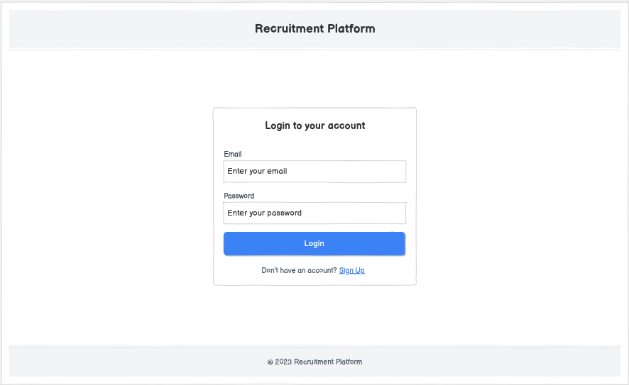
Authentication screen for returning users.
Click → Build your profile
Step 3
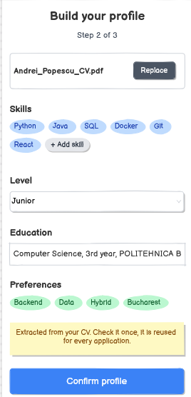
Upload CV once; extracted skills and experience shown for confirmation.
Click → Discover
Step 4
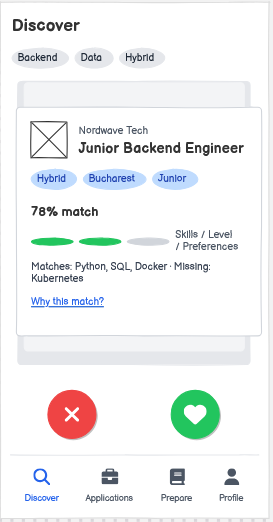
Card-based role browsing with match estimate and key details.
Interested → It's a match
Step 5
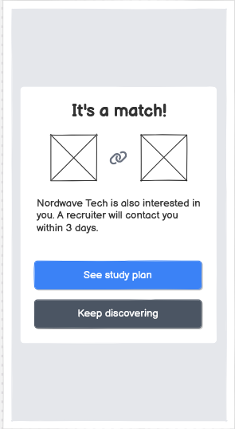
Mutual interest confirmed; next steps shown.
Click → My applications
Step 6
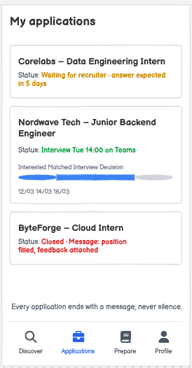
Status pills, expected response times, every application closes with feedback.
See study plan → Prepare
Step 7
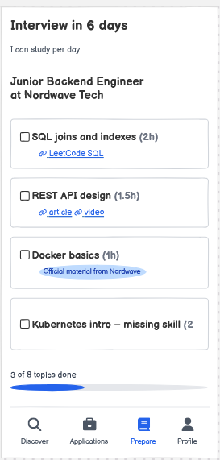
Role-specific study plan with topics, resources and time estimates.
Click → Practice / Resources
Step 8
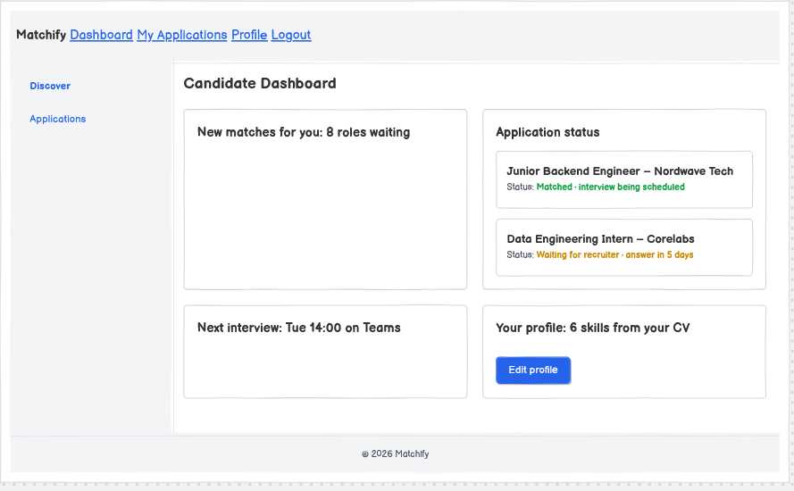
Overview of applications, matches and preparation progress.
Click → Any section
3.4
Desktop recruiter experience, from creating a role to scheduling interviews. 7 screens.
Step 1
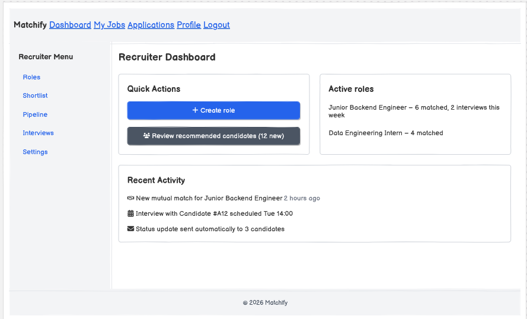
Overview of active roles, pipeline metrics and recent activity.
Click → Create role
Step 2

Define required skills, level, type and preferences once.
Publish role → Recommended candidates
Step 3
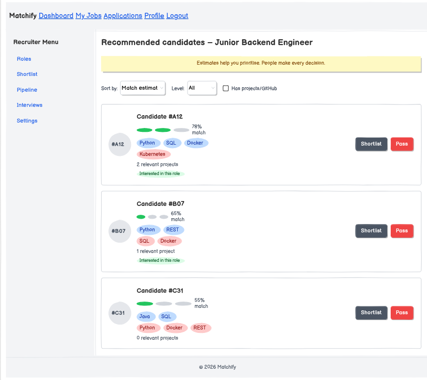
Explained shortlist with matched/missing skills before reading CVs.
Click candidate → Candidate detail
Step 4
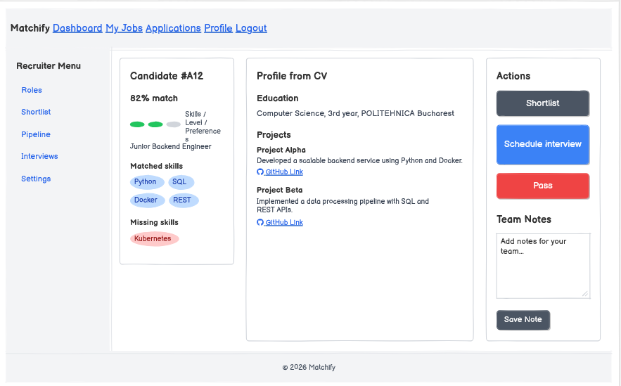
Full profile, matched skills, projects and CV; shortlist or pass actions.
Shortlist (+ mutual interest) → Pipeline: Matched
Step 5

Drag-and-drop pipeline with export to ATS/spreadsheet option.
Schedule interview / Close → Modal
Step 6a

Quick scheduling with time slots; candidate notified automatically.
Confirm → Pipeline: Interview scheduled
Step 6b

Template message with optional personal note; never closes in silence.
Close → Template message sent to the candidate
3.5
| Screen | Element | Opens |
|---|---|---|
| Welcome | Login / Sign up button | Login |
| Login | Continue button | Build your profile |
| Build your profile | Start discovering button | Discover (swipe) |
| Discover (swipe) | Interested (heart icon) | Why this match? |
| Why this match? | View details button | Match details |
| It's a match! | View applications button | My applications |
| My applications | See study plan link | Prepare |
| Prepare | Start practice button | Practice / Resources |
| Candidate dashboard | Any section link | Respective section |
| Recruiter dashboard | Create role button | Create role |
| Create role | Publish role button | Recommended candidates |
| Recommended candidates | Candidate card | Candidate detail |
| Candidate detail | Shortlist button (+ mutual interest) | Pipeline: Matched column |
| Pipeline | Schedule interview action | Schedule interview modal |
| Pipeline | Close action | Close application modal |
| Schedule interview modal | Confirm button | Pipeline: Interview scheduled |
| Close application modal | Send button | Template message sent to candidate |
| Pipeline | Export to ATS/spreadsheet button | Export file download |
3.6
The match estimate is always shown with its breakdown: matched skills, missing skills, level and preferences. It is presented as an estimate to help people decide, not a verdict.
Automation suggests candidates and saves time on admin work, but every shortlist, advance, schedule and close action is made by a person. The technical interview remains the decision point.
In the recommended candidates view, candidates are shown as "Candidate #A12" until a recruiter clicks through to the detail. This focuses the initial shortlist on skills and projects, not names.
The candidate side is designed mobile-first because candidates browse on phones. The recruiter side is desktop-first because screening and pipeline work happens at a desk.
Moved after the MVP in M2 validation. These features address needs we did not confirm with candidates, so they are deferred until we find evidence they are wanted.
Not needed for the core flows we are testing. Interview scheduling is handled with a simple modal; settings will be added when configuration choices become necessary.
3.7
When we wrote this section we expected M5 to be a usability test of these wireframes. The course's M5 turned out to be Validation 2: lead generation, so these questions are still open. We will test them with candidates and hiring-side users once the MVP (M7) gives them something real to click:
3.8
Links to the wireframe sources and the clickable prototype.
Milestone 4 · 16.11.2026
Two face-to-face interviews — a hiring manager and a CS student — plus a main user persona, user stories and use cases for both sides of the platform.
4.1 — Interviews
Both interviews were conducted in person. We did not describe Matchify beforehand. Each interview started with a concrete recent story and followed up with probing questions. The hiring manager interview was conducted in English; the student interview in Romanian (translated below).
I-1
Senior Software Engineer / Hiring Lead · fintech startup, London
Led the most recent junior hire at a 25-person fintech. No dedicated recruiter — two senior developers run the whole process alongside their normal work. Received 50+ submissions; ran a three-stage process including a 4-hour take-home exercise.
I-2
CS student · internship seeker · November 2026
Actively applying to SWE/SRE internships at large tech companies in EMEA. Built a weekly company-list routine, used Claude to tailor CVs, and prepared with LeetCode + Claude Pro mock interviews. Paid for Claude Pro — the only paid tool in his search.
I-1
Fintech startup, London. No dedicated recruiter; two senior developers ran the full process alongside their regular engineering work. Conducted in English.
50+
submissions received for the Junior Software Engineer role
3
stage process: Coderbyte MCQ/LeetCode → 30-min live interview → 4-hour take-home exercise
30 min
per candidate to review and score the take-home submission
AI
shared LLM access given to all candidates; conversations collected and reviewed
"We discovered that candidates were already using AI tools for their take-home assignments, so we decided to formalise this by giving everyone access to the same LLM tools through shared API keys."
"What we were missing was visibility into the candidates' actual problem-solving processes and how much of their submitted work they understood."
Can you tell me about the last recruitment for a junior or internship technical role that you were directly involved in?
The most recent recruitment I was involved in was for a Junior Software Engineer position. I participated directly in the hiring process alongside another senior developer. We were responsible for reviewing candidates, assessing their technical skills and helping make the final hiring decision.
Roughly how many candidates applied, and how many made it to the interview?
We received over 50 submissions.
How did the selection process go, from receiving the applications to choosing the candidate?
Initially, we shared the job specification with multiple recruitment agencies, which sourced candidates for us. We also considered internal recommendations. The two senior developers reviewed the CVs and initial assessments to shortlist candidates. The first step was a Coderbyte test with MCQs and a couple of LeetCode-style questions. The second step was a 30-minute live interview with one LeetCode-style question and questions about the candidates' previous experience. We also allowed some time for the candidate to ask questions about our company and the role. The third step was a 4-hour take-home exercise where the candidate gets the chance to run some analysis on a dataset — very close to a real-life work assignment. Once the assignment is done we organise 30 minutes with the candidate to present their submission.
We discovered that candidates were already using AI tools for their take-home assignments, so we decided to formalise this by giving everyone access to the same LLM tools through shared API keys. We also asked candidates to share their LLM conversations so we could better understand how they approached problems. During the final technical interview, we challenged them on their submitted solutions to establish how well they understood their own work. This helped us compare candidates more consistently and make a more informed final decision.
Which stage took the most time from the team?
Scoping out the take-home exercise and reviewing the submissions.
Roughly how long did it take, and what activities filled that time? follow-up
It took around 30 minutes per candidate. We improved the time by using AI on our side more and by over-indexing on how much the candidates could defend their submission in the follow-up presentation.
How did you assess the candidates' technical skills in that recruitment?
We primarily used technical take-home assignments and live technical interviews. We were not interested in past experience. What we appreciated more were good first principles and well-thought-out answers and submissions.
Another important part of our process was allowing candidates to use LLMs while completing their assignments. We provided equal access to these tools and asked them to share their interactions with the AI. This allowed us to assess their problem-solving approach and how they used AI throughout the process. During the final interview, we asked challenging questions about their submissions to test their understanding and distinguish between candidates who genuinely understood their solutions and those who relied heavily on AI-generated answers.
Do you remember a recent situation when it was hard to decide whether a candidate was a good fit for the role?
One challenge was assessing candidates fairly when we realised they were all using AI tools for their take-home assignments. It became harder to judge technical ability based on the final submission alone, because a polished solution didn't necessarily demonstrate that the candidate understood the underlying code. Hence why we provided the same access to AI to everyone.
What information was missing, and how did you proceed? follow-up
What we were missing was visibility into the candidates' actual problem-solving processes and how much of their submitted work they understood. To address this, we standardised access to LLMs and requested their AI conversation histories. We also introduced more challenging follow-up questions during the technical interviews, based specifically on their submitted solutions. This gave us more insight into their reasoning and made it easier to benchmark candidates fairly.
What tools or methods did you use to manage that recruitment?
We used custom Notion databases to track candidates and their progress through the recruitment process. We initially worked with recruitment agencies, but subsequently introduced Juicebox AI as an alternative for sourcing candidates. For technical evaluation, we used AI-based scoring to help review large numbers of take-home submissions, alongside manual technical assessments and interviews. Other tools used in our recruitment activities included LinkedIn and Coderbyte.
I-2
Actively applying to SWE/SRE internships at large tech companies in EMEA. Built a disciplined weekly routine around a hand-curated company list. Conducted in Romanian; translated below. Questions follow the student interview guide.
Weekly
cadence: checked a fixed list of EMEA companies for new SWE/SRE internship postings each week
Claude
used to tailor the CV to each job description — fed the whole CV and JD, got a targeted revision back
OA → wait
received an online assessment within a week of applying; then a long wait before the technical interview
Claude Pro
the only tool he paid for — used for mock interviews and algorithmic review. No paid courses or CV services.
"If I had worked seriously on a lab, done a project, or used the technology from the job description at work, then I said I was a good fit."
"There was no step I had to repeat, but it took a long time from the online assessment to the actual technical interview."
What did your last search for an IT internship or job look like? When was it, and in which field? follow-up
I basically took a list of companies that offer internships in EMEA and checked what jobs they had from week to week. I was looking for SWE/SRE internships.
Where did you look for listings, and how did you choose which ones to apply to? Walk me through your last application, step by step. How did you check whether your skills matched the requirements? follow-up
I found the role on the company's website, looked at the minimum requirements and what the job would involve, and decided whether I fit. After that I put my CV with all my projects into Claude to tailor it to the job description. If I had worked seriously on a lab, done a project, or used the technology or process from the JD at work, then I said I was a good fit.
What happened after you applied?
I received an online assessment (OA) about a week later.
Was there a step that took longer than you expected or that you had to repeat?
There was no step I had to repeat, but it took a long time from the online assessment to the actual technical interview.
How did you prepare for your most recent technical interview or test?
LeetCode — a list generated based on Neetcode 150, plus Claude.
Have you ever paid for anything to help with your search or preparation — a course, a subscription, a CV review? follow-up
Only a Claude Pro subscription, for mock interviews and algorithmic review.
4.2 — Findings
M2 gave us survey data from 13 people. M4 gave us two in-depth conversations, one on each side of the market. The interviews confirmed the strongest M2 findings, deepened the AI dimension, and surfaced one new insight on the candidate side.
Confirmed
50+ submissions for one Junior SWE role, reviewed by two senior engineers with no dedicated recruiter. The most time-consuming step was designing and reviewing the take-home exercise — 30 minutes per candidate after shortlisting. This is engineer time, not HR time, which makes the cost invisible in a headcount sense but very real in throughput.
New — hiring side
The hiring manager had to redesign the entire evaluation process mid-recruitment when he realised all candidates were using LLMs. A polished submission no longer means the candidate understands their solution. His fix — standardised LLM access, collected conversation histories, defence-focused final interviews — is a workaround, not a solution. This is an emerging problem for any platform that surfaces candidates through project or take-home signals.
"We were not interested in past experience. What we appreciated more were good first principles and well-thought-out answers."Hiring Manager · Q6
Confirmed + deepened
The student built a weekly cadence around a hand-curated company list, used Claude to adapt CVs to each JD, and prepared with a structured Neetcode-150-based LeetCode list. This confirms the M2 finding that motivated candidates self-organise with free tools. But his system is entirely manual — he maintains the company list himself, tailors each CV by hand with AI assistance, and has no way to know whether a role is a good fit before investing the tailoring time. The pain is friction, not ignorance.
New — candidate side
The student highlighted no step he had to repeat — but the gap between the online assessment and the actual technical interview was notably long, with no visibility. He passed the OA and then waited, with no indication of how long the wait would be or whether he was still in consideration. This is a narrower, later-stage version of the application black hole: candidates who pass a filter still lose sight of where they stand.
Confirmed
The student paid only for Claude Pro — for mock interviews and algorithmic review. No job-board premium, no CV service, no prep course. This matches the M2 finding that candidates use free tools (LeetCode, ChatGPT, YouTube) and rarely pay for search-side services. It reinforces that a candidate-side revenue model based on subscriptions will face high resistance unless the value is demonstrably better than what Claude Pro already provides.
Confirmed
The student's self-assessment criteria: "If I had worked seriously on a lab, done a project, or used the technology from the JD at work, then I said I was a good fit." The hiring manager independently said the same thing from the other side: not interested in past experience, valued first principles and demonstrated problem-solving. Both sides are already thinking in terms of demonstrated skills over listed credentials — which is exactly what Matchify's matching model is built around.
M4 hypothesis update
| Hypothesis / finding | M2 status | M4 update |
|---|---|---|
| Screening overload costs engineering time | Supported in M2 | Deepened: 50+ submissions reviewed by engineers with no recruiter; 30 min per take-home review (I-1). |
| Projects and demonstrated skills matter more than credentials | Partly in M2 | Confirmed from both sides: hiring manager valued first principles; student assessed fit through project overlap with JD (I-1 + I-2). |
| Candidates self-organise prep with free tools | Partly in M2 | Confirmed: structured LeetCode list + Claude for mock interviews. Only Claude Pro paid for (I-2). |
| Application black hole persists past initial filters | Supported in M2 | Extended: visible also after OA — long wait with no status before the technical interview (I-2). |
| New: AI in assessments invalidates take-home as a pure signal | Not in M2 | Surfaced in M4 (I-1). Hiring manager redesigned the whole process around it. To revisit in M5. |
| Candidates will pay a subscription for job-search tools | Not validated | Challenged: the only paid tool is Claude Pro for prep, not for search. Subscription willingness is low (I-2). |
4.3 — User personas
Gabriel represents the candidate side — a student navigating the job market for the first time, more interested in growing than in searching. Andreea represents the recruiter side — an HR manager who wants to reach a younger generation authentically and match candidates to roles that actually fit them.
The ambitious CS student
Motivators
Behaviours
Needs
What success looks like
The people-first HR manager
Motivators
Behaviours
Needs
What success looks like
4.4 — User stories
User stories follow the format: As a [role], I want to [action] so that [outcome]. Priority tags: MVP in scope for M7; Post-MVP planned for later.
| # | User story | Motivated by | Priority |
|---|---|---|---|
| C-01 | As Gabriel, I want to see a clear picture of my current skill level so that I know exactly where I stand before applying to any role. | Gabriel needs: clarity on his own strengths; doesn't know what makes him a good fit | MVP |
| C-02 | As Gabriel, I want to receive job recommendations ranked by how well-prepared I am for them, so that I apply to roles I can actually land rather than ones that are out of reach. | Gabriel needs: job recommendations tied to readiness level, not just interest | MVP |
| C-03 | As Gabriel, I want to spend most of my time preparing for interviews rather than searching for them, so that I improve consistently instead of filling in applications. | Gabriel wants to invest in preparation over job-hunting admin | MVP |
| C-04 | As Gabriel, I want to understand which of my skills make me a strong fit for a specific role, so that I can present myself confidently and stop second-guessing my profile. | Gabriel needs: clarity on his own strengths; doesn't know what qualities make him right for a job | MVP |
| C-05 | As Gabriel, I want to upload my CV once and have my skills extracted automatically, so that I never retype the same information into application forms. | M2: CV re-entry friction (3 unprompted mentions) | MVP |
| C-06 | As Gabriel, I want to always know where my applications stand — including after online assessments — so that I am not left guessing whether I am still in the running. | M2 + I-2: application black hole persists past initial filters | MVP |
| C-07 | As Gabriel, I want to connect with people working in roles I am targeting, so that I can learn what the work actually looks like before I commit to a path. | Gabriel motivator: actively seeks people with sought-after careers | Post-MVP |
| # | User story | Motivated by | Priority |
|---|---|---|---|
| R-01 | As Andreea, I want to quickly assess a candidate's real skill level so that I can recommend them for the right role and avoid mismatches that waste everyone's time. | Andreea needs: fast, accurate evaluation to recommend the right roles and avoid wrong fits | MVP |
| R-02 | As Andreea, I want clear data on each candidate's skills and progress so that I can tailor my recruitment messages and adapt the process to what actually works. | Andreea needs: data to adapt recruitment and communication; she tracks stats to find what attracts the best candidates | MVP |
| R-03 | As Andreea, I want to help candidates identify their own strengths so that I can present them more effectively to hiring managers and increase their engagement with the process. | Andreea needs: candidates who understand themselves so she can advocate for them and boost engagement | MVP |
| R-04 | As Andreea, I want to advance, schedule or close a candidate with one action and have them notified automatically, so that the pipeline does not consume my whole week. | Andreea needs: work-life balance; M2: pipeline admin is a confirmed time-sink | MVP |
| R-05 | As Andreea, I want every closed application to send a message to the candidate, so that no one is left in silence regardless of the outcome. | Andreea is empathetic — she cares about how people feel; bilateral ghosting hurts trust | MVP |
| R-06 | As Andreea, I want to export my pipeline to our existing ATS so that Matchify fits alongside the tools we already use without replacing them. | M2 + I-1: companies don't replace their ATS — any new tool must integrate with it | MVP |
| R-07 | As Andreea, I want to publish our team culture and preparation resources on the platform, so that candidates arrive already understanding who we are — not just what skills we need. | Andreea wants to break the corporate mould and attract candidates who share the company's values | Post-MVP |
4.5 — Use cases & user flows
Two use cases cover the main value proposition, one for each persona. Each shows the happy path and the most important alternatives. These flows map directly onto the wireframes from M3 (and the updates in 4.6).
Actor
Candidate (Gabriel)
Precondition
Gabriel is registered; has not yet built a profile.
Goal
Discover a matching role, express interest, and receive a preparation plan if the recruiter also shortlists him.
Upload CV
Gabriel uploads his CV. Skills, experience level, and preferences are extracted and shown for review and correction.
Alt: Alex edits extracted skills. Error: unsupported format → prompt to convert to PDF.
Set preferences
Alex selects preferred track(s), location and work arrangement. These feed the discovery ranking.
Alt: skips preferences → default: all tracks, all locations.
Swipe & signal
Gabriel sees one role at a time: match estimate, matched/missing skills and projects, job details. Swipes right (interested) or left (pass).
Alt: taps "Why this match?" to see the full breakdown before deciding.
Match
If the recruiter has already shortlisted this profile, a match is confirmed. Both sides are notified. Gabriel sees the status on his applications screen. Alt: recruiter has not yet responded → status shows "Sent — awaiting recruiter review".
Prepare
On match, Gabriel unlocks a preparation plan: topics drawn from the role's required stack, resources sized to the time remaining before the interview.
Postconditions
Actor
HR manager (Andreea)
Precondition
Company account exists; at least one candidate with a matching skill profile has signed up.
Goal
Post a role, review explained candidate recommendations, shortlist, schedule, and close every application with a message.
Create role
Defines required skills, experience level, role type and preferences. Platform generates a recommendation queue immediately.
Alt: paste a job description → platform parses and suggests skill tags.
Review shortlist
Sees candidates with match estimates and matched/missing skills and projects. Candidates shown anonymously until clicked through.
Alt: clicks candidate detail to see full profile and projects before deciding.
Match
Shortlisting a candidate who also swiped right creates a mutual match. Candidate moves to "Matched" column and is notified. If the candidate hasn't swiped yet, the shortlist sits in queue.
Schedule
Opens the scheduling modal, picks a time slot, confirms. Candidate is notified automatically with time and format.
Alt: different time zone → modal shows slots in both time zones.
Close
After the interview, closes each application (hire / reject / on hold). A template message is sent. Cannot close without sending a message — prevents one-sided ghosting. Pipeline exportable to ATS/spreadsheet at any time.
Postconditions
4.6 — Wireframe updates
The M3 wireframes covered the two core flows at structure level. The M4 interviews surfaced specific problems with individual screens. The table below maps each finding to a concrete screen change.
| Finding | Affected screen | Change made | Motivated by |
|---|---|---|---|
| Candidates drop out silently — no way to withdraw from an active process | My applications | Added an explicit "Withdraw" action to each active application card. Without it candidates can only go silent, forcing recruiters to chase or re-activate candidates they had already screened out. The withdraw action records the exit and notifies the recruiter automatically — symmetric with the Close action already required on the recruiter side. | I-1: "two candidates disappeared after passing the technical test — we had to go back and re-activate candidates we had already ruled out" |
| Recruiter shortlist has no way to compare two candidates directly | Recommended candidates | Added a "Compare" toggle: selecting two candidate cards surfaces a side-by-side view of their matched skills, missing skills, project count and match breakdown. The existing screen shows each candidate in isolation; a recruiter choosing between a 78% and a 65% match has no way to see the specific differences without navigating back and forth. | I-1: "it took around 30 minutes per candidate" reviewing submissions — a direct comparison reduces the cognitive load of the final shortlist decision |
What M5 will test
4.7 — Updated wireframes
The full set of screens updated to reflect M4 findings. Screens unchanged from M3 are included for completeness; the three modified screens are marked below.
4.7a
Mobile-first candidate experience, from welcome to preparing for an interview. 8 screens.
Step 1
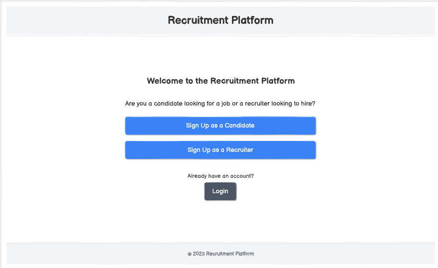
App introduction and value proposition for candidates.
Click → Login / Sign up
Step 2

Authentication screen for returning users.
Click → Build your profile
Step 3

Upload CV once; extracted skills and experience shown for confirmation.
Click → Discover
Step 4

Overview of new matches, application statuses, next interview and profile skill count.
Click → Any section
Step 5

Card-based role browsing with track filter, match estimate, matched/missing skills and "Why this match?" explanation.
Interested → It's a match
Step 6

Mutual interest confirmed; next steps shown.
Click → My applications
Step 7 Updated
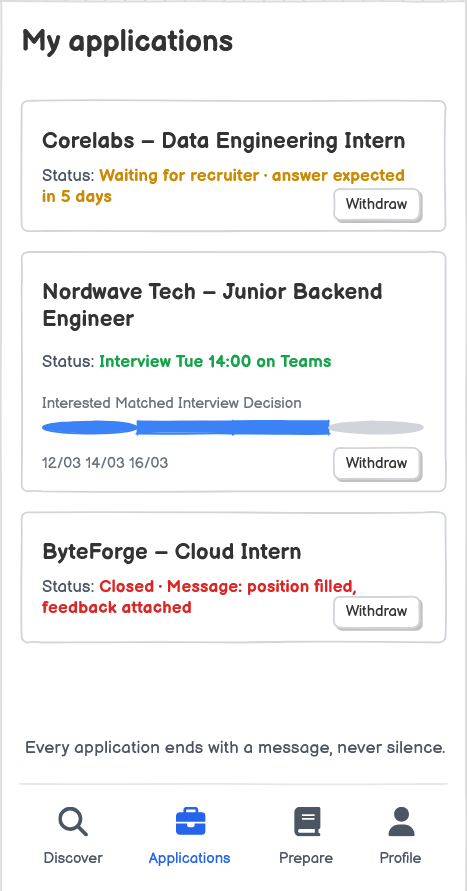
Status pills, pipeline progress bar and expected response times. Each active application now has a Withdraw button so candidates can exit explicitly instead of going silent.
See study plan → Prepare · Withdraw → process ends with notification to recruiter
Step 8 Updated

Role-specific study plan with topics, time estimates and resource links.
Check topic → progress updates · Click link → resource
4.7b
Desktop recruiter experience, from creating a role to closing applications. 8 screens — one new screen added (Compare candidates).
Step 1

Quick actions, active roles with match counts and recent activity feed.
Click → Create role or Review candidates
Step 2
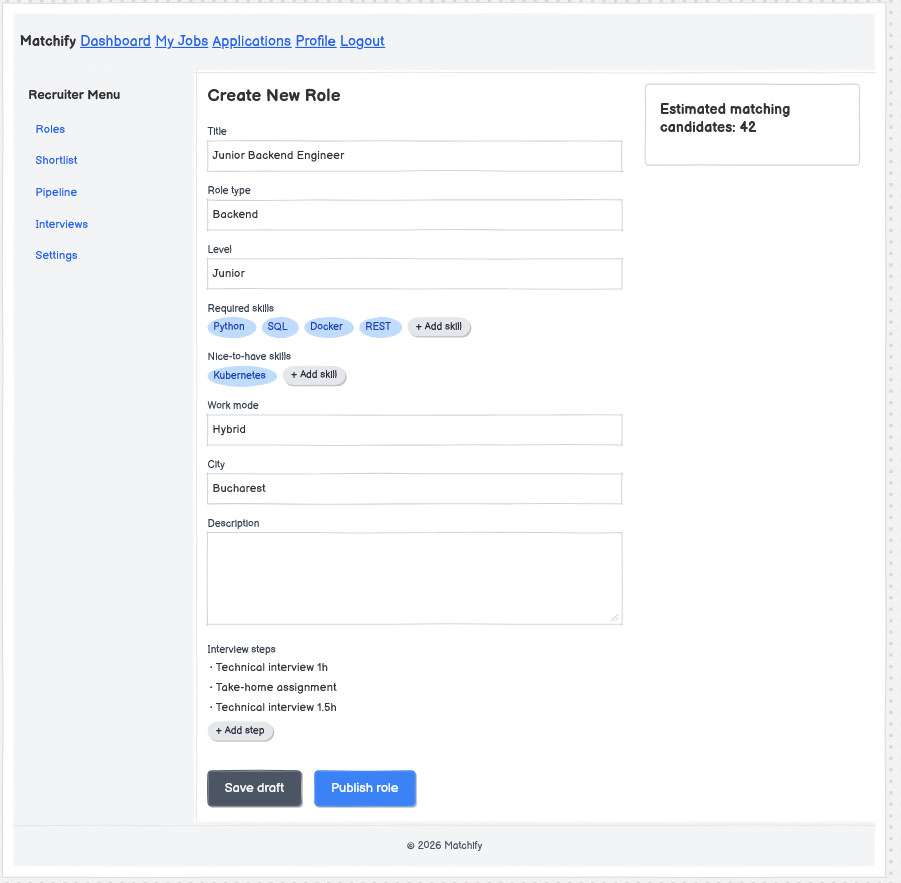
Define required skills, experience level, role type and preferences once.
Publish → Recommended candidates
Step 3

Explained shortlist: match score, matched/missing skills and relevant project count per candidate. Sort by match estimate or filter by level and GitHub presence.
Click candidate → Candidate detail
Step 4 Updated
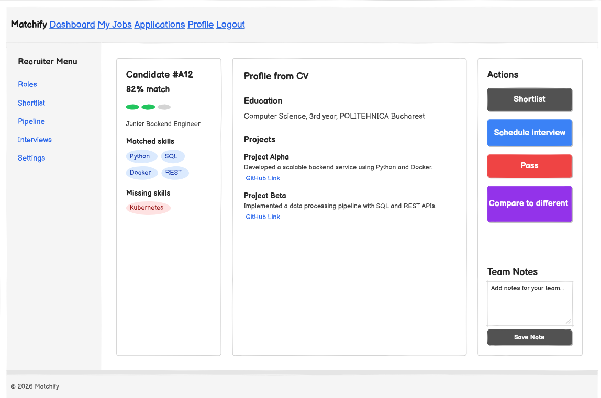
Full profile, matched/missing skills, projects with GitHub links and team notes. Added a Compare to different button that opens the new side-by-side view.
Shortlist / Pass / Schedule interview · Compare to different → Compare candidates
Step 4b New screen
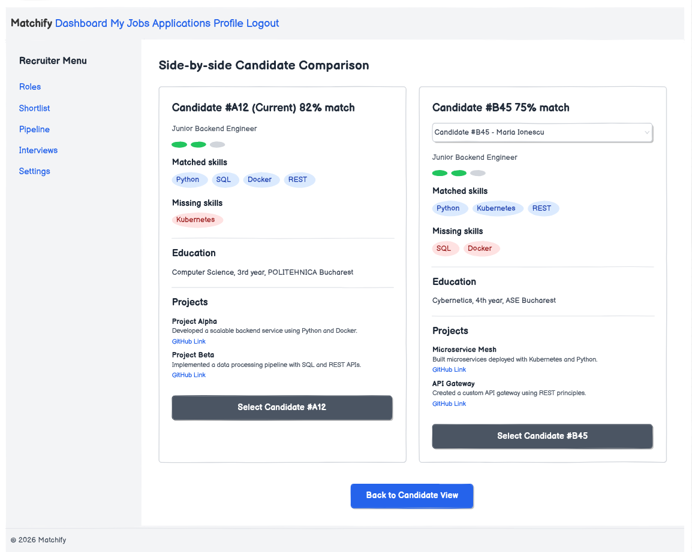
Side-by-side view of two candidates: match score, matched/missing skills, education and projects. Each panel ends with a "Select candidate" action to shortlist directly from the comparison.
Select candidate → shortlisted · Back to candidate view → returns to list
Step 5
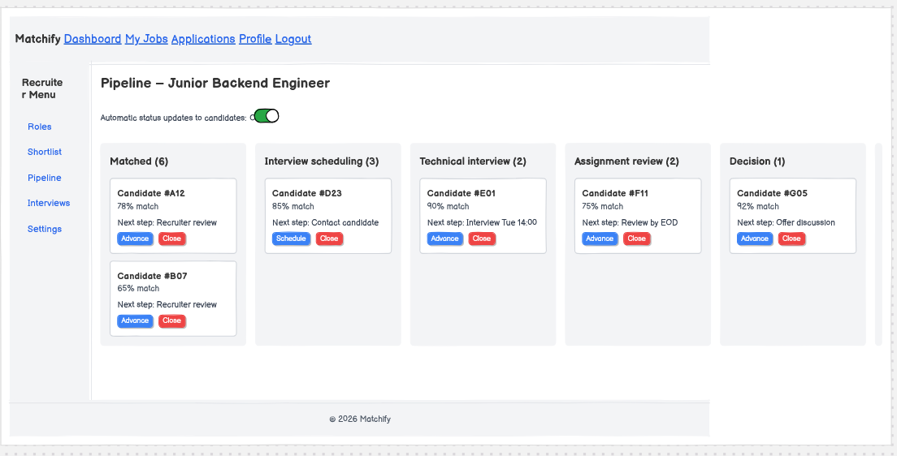
Candidates across stages (Matched → Interview scheduling → Technical interview → Assignment review → Decision). Advance or Close each card; automatic status updates toggle at the top.
Schedule interview / Close → Modal
Step 6a
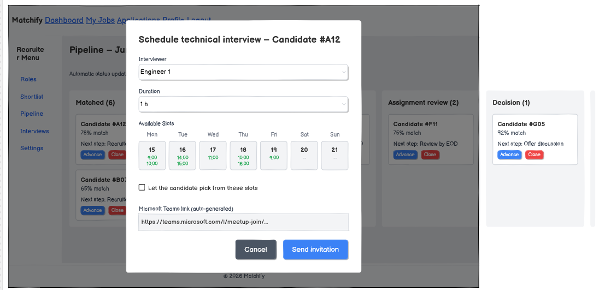
Quick scheduling modal with time slots; candidate notified automatically on confirmation.
Confirm → Pipeline: Interview scheduled
Step 6b
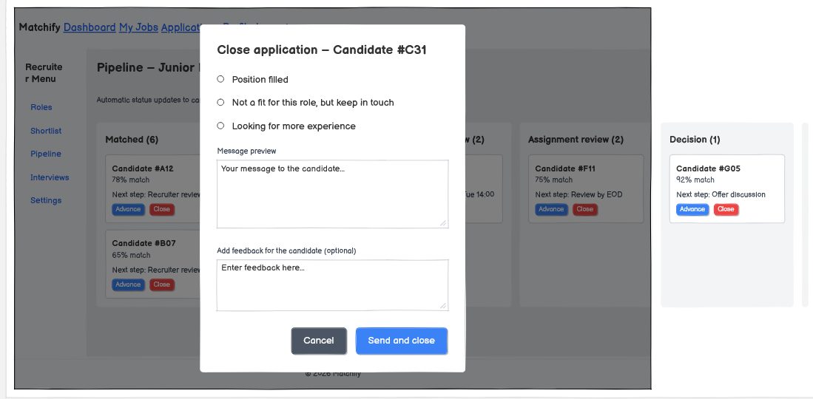
Template message sent to the candidate on close. Sending is mandatory — the confirm button is disabled until a message is selected.
Send → message delivered to candidate · never closes in silence
Milestone 5 · 26.11.2026
We turned the M3 landing page into a working waitlist, measured every visit with PostHog, and shared it on six channels, each with its own tracked link, to see who signs up and which channel brings them.
5.1 — Goal
M2 and M4 asked people we reached personally whether the problem is real. M5 asks strangers to act on it: a signup costs the visitor something (an email and a consent), so it is a stronger signal than an answer in a questionnaire. We wrote the targets below on 22.11, before the first post, so the results cannot move them.
H1 · Reach
≥ 150
unique visitors on the landing page during the campaign.
H2 · Interest
≥ 10%
of visitors join the waitlist (visitor → signup conversion).
H3 · Two-sided
≥ 3
signups from the hiring side, not only candidates: the paying side has to show up too.
5.2 — Lead collection
In M3 the "Join" buttons opened a form that did not send anything. For M5 every call to action on the landing page opens a short signup form that posts to Formspree, so the page stays static on GitHub Pages and needs no backend of our own.
utm_* parameters of the link the visitor came from, so every lead is credited to a channel.5.3 — Analytics
The landing page loads PostHog only on the published site, so our own local testing does not count as traffic. We use the three PostHog tools the milestone asks for:
Web analytics
Visitors, page views, referrers and UTM sources per day, for the whole campaign.
Product analytics
Page view → form opened → signup, broken down by channel, to see where people drop off.
Session replay
Recordings of real visits, with every input masked: how far people scroll and where they hesitate.
Every event carries the visitor's utm_source, utm_medium, utm_campaign and utm_content, so each step of the funnel can be split by channel.
| Event | When it fires | Extra properties |
|---|---|---|
| $pageview | The landing page loads (automatic) | URL, referrer |
| cta_clicked | A call to action that only scrolls the page ("Get early access", "See how it works") | location |
| waitlist_opened | A "Join" button opens the signup form | role, location |
| waitlist_submitted | Formspree accepted the signup | role, location |
| waitlist_failed | Formspree returned an error | role, reason |
5.4 — Campaign
We picked channels where our two segments already are: students and juniors in Romanian student and IT-jobs communities,
and engineers and recruiters on LinkedIn. Each channel got its own link (same page, different utm_content),
and the posts were written for the channel: Romanian for local groups, English for international ones, and always presented
honestly as a student project looking for feedback. No paid ads.
| Channel | Where | Lang. | Posted | Post | Status |
|---|---|---|---|---|---|
| Facebook · students | ACS / UPB student groups | RO | — | — | Pending |
| Facebook · IT jobs | Romanian IT jobs and internships groups | RO | — | — | Pending |
| Reddit · r/programare | Romanian programming community | RO | — | — | Pending |
| Reddit · r/SideProject | International side-project community | EN | — | — | Pending |
| Posts from the team members' profiles | EN | — | — | Pending | |
| Chat groups | WhatsApp / Discord groups of our year | RO | — | — | Pending |
5.5 — Results
Numbers from PostHog and Formspree for 22–25.11.2026. Our own test signups are excluded.
Unique visitors
—
target ≥ 150
Opened the form
—
waitlist_opened
Signups (leads)
—
candidates — · hiring side —
Visitor → signup
—
target ≥ 10%
Effort is the time the team spent on the channel (finding groups, waiting for approval, answering comments).
| Channel | Visitors | Signups | Conversion | Hiring side | Effort | Verdict |
|---|---|---|---|---|---|---|
| Facebook · students | — | — | — | — | — | — |
| Facebook · IT jobs | — | — | — | — | — | — |
| Reddit · r/programare | — | — | — | — | — | — |
| Reddit · r/SideProject | — | — | — | — | — | — |
| — | — | — | — | — | — | |
| Chat groups | — | — | — | — | — | — |
| Direct / other | — | — | — | — | — | Visits without a campaign link |
Best channel
Chosen by signups first and conversion second: a channel that sends many visitors who do not sign up is reach, not interest.
5.6 — What we learned
| Target | Result | Status |
|---|---|---|
| H1 · ≥ 150 unique visitors | — | Pending |
| H2 · ≥ 10% visitor → signup | — | Pending |
| H3 · ≥ 3 hiring-side signups | — | Pending |
Findings from the funnel, the session recordings and the comments on our posts, and what they change for the MVP (M7), are added at the end of the campaign.
Milestones
Official course milestones. This Fiki will be updated with our work at each one; future milestones show only what we plan to do.
Project idea and team registration.
Project title, team and proposed roles, problem, solution and value proposition, customer segments, competition, competitive advantage, key metrics, cost structure and revenue streams.
Customer discovery with two questionnaires (9 candidates, 4 people on the hiring side) and an interview with a technical hiring manager: problem hypotheses scored, new problems found, product scope adjusted, and one step left before Customer Validation.
Wireframes of the candidate swipe flow (8 screens) and the recruiter pipeline (7 screens), built in Balsamiq and linked into a clickable prototype.
Two face-to-face interviews: a hiring manager at a fintech startup (London) and a CS student actively searching for SWE/SRE internships. Main candidate persona, user stories for both sides, two core use cases (candidate flow + recruiter flow), and wireframe updates from M4 findings. Read the full section →
Waitlist and newsletter form on the landing page (Formspree), PostHog web analytics, a conversion funnel and session replay, and a campaign on Facebook, Reddit, LinkedIn and chat groups with one tracked link per channel, compared channel by channel. Read the full section →
Market size, deeper competitor analysis, and first cost and pricing estimates.
A minimal working version of the core flow: profile, discovery, matching and a basic recruiter view.
Attempt to sign a first employer customer or pilot partner.
Presentation deck for the project.
Final presentation and the completed Fiki.